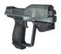
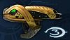
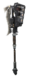

De: La Frikipedia, la enciclopedia extremadamente seria.
De: La Frikipedia, la enciclopedia extremadamente seria. De: La Frikipedia, la enciclopedia extremadamente seria.
«Aquí se muere hasta el apuntador»
~ Homer Simpson sobre Halo 3. Desde la Punkie, le agradecemos su colaboración.
«¡Joder!,¡Que juego mas violento!»
~ George Bush viendo su país.
Tercera parte del posiblemente más entrañable (y confuso) videojuego que se ha atrevido a cruzar los cortocircuitos recalentados de la Z-box 360 (aunque no tan recalentados como la PS3), Este juego, además de unos gráficos que superan lo visto hasta ahora (llegando el equipo de la Punkie a usar tres píxeles) la posibilidad de matar heridos y civiles y un argumento de nivel 10, tiene la pega de que por fin liquidan a Johnson y a la comandante Miranda Llaves, aparte de cargarse a todos los malos y a casi toda la humanidad...
Esta fase cuenta como espartan sufre una paranoia con Catana y se cae desde el andamio de la casa de su abuelo (en la que se refugiaba del UNSC, no vaya ser que tenga que cumplir su promesa y acabar la guerra), y se le queda encaskillá la armadura, per no por mucho tiempo... Por que llega Johnson que lo desencasquilla como haria con una escopeta (a golpes de martillo),Cuando se despierta, Johnson se da cuenta de que falta la amiga imaginaria de John.
Llamada así por que el Jefe es el ultimo y tiene que cerrar/serrar marines, que mas da. Bueno el caso es que se despierta en medio de la jungla (no, no hablo de la de cristal, sino de una más abstracta en la que viven animales no pokemonizados como el conejito de orejas tiesas o los wombats) con el Sargto. Mayor Avery Johnson a lado del Pinkisidor, que ahora ayuda a los humanos, junto a los otros Elits.
Avanzan por el bosque hasta dar con un grupo de Enanos encabezados por unos Brutos con armaduras nuevas y molonas. Tambien se ven prisioneros marines de vez en cuando: A uno le crujen las costillas si no intervienes. Consejo: no intervengas. Tambien hay algunos Phantoms , que vienen a joderte, básica y cúbicamente,Si bajas te encuentras un muelle con Jackales que te apuntan con armas de gran potencia llamados rifle de Haz orina azul (vease hagua) de arados a partículas. y el pelican de rescate se peta contra una presa por culpa de 2 Banshyete.
Más tarde El Master Chief se encuentra con un comité de bienvenida alienígena más considerable, el cual aun no se sabe si tira a dar, por lo que tienen la ventaja cuando Johnson se acerca a preguntar, cayendo este prisionero y tal, y tal.Así que John decide ir a rescatarlo, a ver si le da un habano (al final le da una colilla, pero como si tal cosa) y huyen en un Pelican hacia una base de la UNSC.
Espartan, el Pinkisidor y Johnson bajan del pelican. Al llegar todos alucinan...Total, que a Spartan-117 le toca despejar el área de despegue para que huya la dama mientras nosotros volvemos, se activa una bomba, se va a rescatar a todos los marines que estaban durmiendo en los barracones, se reactiva la bomba desactivada por los Brutes y se larga uno por un ascensor, para luego irse a la autopista M-30, sí, por raro que parezca, en el 2553, ya esta terminada,el ascensor cae porque alguien no programo bien la bomba.
Lo primero que dices al empezar el nivel es puto Ascensor, pero como ahora los Brutes y los patéticos e inútiles Grunts se encaminan a lo que quedo de la base para liquidar a todo el mundo,el Jefe tiene que salir de allí en el Warthog convenientemente situado para su escape, ahora tendrá que llegar hasta la única ciudad desarrollada de África a través de una superautopista (el juego no es muy coherente en este punto) esquivando a los Harleystas Brutes y los Escupitajos de Plasma de los Wraith, para llegar a una sede de Traxus.
Ahí va John con unos paletos marines, a ver si derriba los Wrath antiaereos, aunque cuando solo falta uno aparece un Scarab-bajo, pero versión remasterizada con modos de autodestrucción inéditos,Cuando ya todo estaba perdido, se oyó un grito de esperanza:
«¡Mierda, se jodó el invento!»
~ Un bruto al joderse el andamio y bajar el Scarab a la altura en la que se puede subir.
Una vez encima, Pepe se carga el escudo que tapa un botón que pone auto-destrucción. Tras romperlo le pega un tiro. Otro tiro. Otro tiro. Un misilazo. 3 misilazos. Se cabrea y le pega un mordisco y se activa la auto-destrucción, que envía al Jefe de un pepinazo a un monte donde hay una supermegahiperchulitorreta, le pega un mordisco y ya esta. Ya pueden venir las naves (no sin tiempo las condenadas)... Pero el profeta de la verdad activa el arca...es el fin?
En realidad lo que se activó es un portal, pero joder con el flash. Es un flash gordón, Pero aparece una nave extraña medio corroida que se estrella, y encima La flota Covenant se introduce en el portal. Así que a Espartan y Pinkisidor les toca entrar en la ciudad con la manguera de los cazafantasmas y un disc-man a desinfectar.
Cuando todo esta perdido aparecen unos pinganillos con forma de espada energética, y con dos cojones salen varios Elites de dentro (no olvidemos que en Palo 2 se forma una alianza (pero no la matrimonial, capullín) con los humanos. Así que Espartan entra en la nave en ruinas y encuentra un mensaje de Catana, la joya del UNSC, la mejor IAD. Y cuando lo va a coger...
Tras consultar debidamente con el Elit Blancucho (sí, el mismo de Palo 2) deciden que los humanos se quedan a luchar y los elits y Espartan, junto a un regimiento de parad... esto... marines. Por que sobornaron al mandamás, de manera que mandaron solo a 300 comandados por Leospartan-117 y Pinkisidor (N. del A.: Esto no es un plagio de 300.) más 400 ateniélites. que lucharon en el portal de las Termo-pilas (Pilas que reaccionan al calor que abrieron el portal).Volviendo al mundo inteligente, atravesaron el portal y entraron, llendo a parar a el Arca
Ahora la misión mas importante de la guerra es derribar o matar al profeta de la verdad antes de que active el anillo de neutrones asesinos, pero primero hay que derribar los 3 escudos que lo protegen de la ira de los rebeldes, así que la UNSC divide el trabajo entre el Master Chef, Johnson y el Inquisidor, como era de esperarse Johnson fracasa, así que el Jefe tiene que ir a arreglarlo todo antes de que sea demasiado tarde. Después de destruir el escudo, John conduce un Scorpion y destruye 3 Banshees, 2 Scarabs, 128 Grunts, 6 Ghost y 218 Grunts mas.
Mientras tanto en la ciudadela Verdad le confiesa su sádico y enfermizo amor al Sargento Johnson, diciéndole que lo necesita para poder llevar su sueño de una gran ola de suicidios de carácter religioso a cabo, pero un Pelican se estrella y la capitana Keyes se dispone a salvar a Johnson para luego ser asesinada por Verdad, en eso llegan el Jefe y el Inquisidor con apoyo de los flood, El inquisidor asesina a Verdad poniéndole fin a la Guerra pero Gravemind los traiciona.
«Corre por tu vida!!!!, vienen los Flood»
~ El inquisidor Después de la traición de Gravemind
Regreso a Puta Caridad (Ahora infestada por los Food, con raros bultos en forma de hamburguesa por sus calles, surgidos de la orina Food), para rescatar a Catana (perdida tras los sucesos de Ala-Delta Halo). Ella es la clave, y prefiero rescatarla antes de que se me meta otra paranoia con ella.
Ella tiene el Indice de activación del primer Halo, con el, se puede acabar para siempre con los Food y Gravemind.
«Vaya suerte que tengo»
~ Espartan-117 al encontrar a Catana
Al huir, Pepe se dejó encendido el mechero, que al entrar en contacto con la orina food, acaba con Puta Caridad y Gravemind.
Aquí todo es un guiño al primer Halo... La misma sala de control, esta nevando, esta Johnson, que ha aparcado la fragata en doble fila y hay que irse pronto y encima que Gravemind esta reconstruyendose con piezas de lego de las que sobran que utiliza Chispa Emo para reconstruir el nuevo anillo tal cual el primero (ni siquiera ha mirado el catálogo de moda, que ahora se lleva el campo y la tormenta, leshes).
Al llegar a la sala de control, que ya costó, que esta lleno de Flood, entras en la sala de activación...Aquí el Robo-Homosexual, con un rayo hipomagnético a lápiz de grafito, intenta aplastar a Espartan, pero Johnson se levanta (sí, más o menos como Lázaro, pero en vez de andar le pega un pepinazo a 343 Guilty Spark con el Spartan Laser (arma que funciona a base de poner Carrusel deportivo, que es transmitido por un rayo, de manera que solo lo oye el que lo recibe)).
Ahora viene lo difícil: Coger un Wathhog y correr a toda ostia por que el palillo se esta callendo a piezas de lego, Y para colmo cuando llegas aun tienes que ir al portal, que se esta cerrando.
En el video final es jefe casi muere aplastado por un Carrow y por un Escorpión, Y encima se le cierra el portal de manera que pasa la mitad en la que iba el Pinkisidor y la del Pepe se quedó allí, y por eso se le da por muerto, pero si miras los títulos de crédito (10000000 palabrejas de nada) descubres que Pepe sigue vivo, pero tardarán años en ir a buscarlos. Mientras Pepe se da una siesta en una cámara siestogénica, que sabe dios que haría allí.
Se nota que la guerra empezó un martes 13 de 2520 y que acabó un 3 de marzo de 2553.
| Nombre del arma en la UNSC | Afoto | Descripción. |
|---|---|---|
| Pistola M6G |  |
La Arma siempre fiel del jefe maestro, todo el mundo tiene una y en ocasiones es mejor que un rifle de francotirador, su mejor compañero esta en la patética pistola de plasma, no llevas muchas balas pero con un tiro en toda la cabeza puedes matar a un Grunt o Jackal. |
| Subfusil M7/sin casquillo | Ametralladora mucho mas pesada que una Uzi y con muchas mas balas, y una increíble herramienta para comparar a los humanos normales con los Spartan, pues mientras los primeros necesitan mucho esfuerzo para cargar uno, los Spartan pueden hacer malabares con 3. | |
| Rifle de asalto MA5C-ICWS | El arma principal de todo el ejercito de la UNSC, símbolo de las fuerzas intergalacticas humanas desde hace mucho tiempo y una de las armas que lleva el nombre de algo que no parece, pues no solo no es un Rifle, sino que lleva un contador en vez de mira con la esperanza de que alguien le amarre un Láser. | |
| Rifle de batalla BR55HB-SR | Otra de las armas principales del cuerpo de marineritos de la UNSC, casi con la misma potencia del rifle de asalto en ráfagas de disparos mas cortas, pero como este si tiene mira puedes apuntar mejor y dar uno que otro tiro a la cabeza de el enemigo. | |
| Escopeta M90A-CAWS |  |
Llamada por los canis y sus derivados vulgarmente como "Changon", esta es la arma con mas probabilidades de parar a la poderosa espada de energía de los Covenant, pues cuando están justo enfrente tuyo solo es apretar el gatillo y los mandaras al Hueco Mundo. |
| Rifle de precisión SRS99D-S2 AM | Una de las pocas armas cuya destreza es claramente superior a su par del Covenant, el problema de este Rifle es que es tan silencioso como un concierto de Heavy Metal y cuando lo usas te expones a que te caiga una lluvia de plasma y grunts. | |
| Lanzacohetes M41 SSR MAV/AW | Ohh por Diox, esta arma vale mucho a pesar de la poca munición que tengas, pues por alguna razón un disparo de este Lanzacohetes es mas poderoso que el disparo de un Scorpion y el escupitajo de un Wraith juntos...ademas de que es autoguiado. | |
| Laser Spartan W/AV M6 G/GNR | Otro nombre de arma que confunde porque ese maldito laser lo puede cargar hasta un patético soldado de la Tropa de Operaciones ANBU, es un arma que nunca debe ser usada en misiones de espionaje pues el laser que emite 5 segundos antes de disparar te hace | |
| Granada de fragmentación M9 HE-DP | Me vas a decir que no sabes que es una granada si incluso haces una muerte muertacular con ella. En la imagen esta el perro que te la devuelve si lanzas mal la granada. | |
| Rifle de plasma | Dime cual es el parecido de esa cosa con un rifle y seguro te ganas una copia de Halo 4, es el arma mas inútil que puedas encontrar en modo multijugador, pero en modo campaña es valiosa y mas si eres uno de esos inútiles soldados ODST | |
| Aguijoneador | Que deberías hacer con un montón de diamantes morados que explotan al contacto con la carne humana y te dan la oportunidad de ser el joyero mas rico del mundo? pues úsalos como arma para ver a cuantas personas matan y ver cual explosion los lanza mas lejos, te ayudaría a explotar gente.
| |
| Espada de energía |  |
Arma insignia de los Elites y que emite un suspiro de frescura al ser activada (como el que haces cuando acabas de beber), representa una de las mas grandes ironías de Halo, pues en un mundo lleno de balas y plasma el arma mas poderosa es una pinche espada. |
| Rifle de partículas (Rifle de haz) | Arma utilizada sobretodo por los Kig-Yar (Los Jackals en todos los otros idiomas del planeta lodo) para pegarle un tiro en la cabeza al Jefe Maestro en cuanto tuvieran la menor oportunidad de hacerlo, su defecto al igual que el rifle humano es que deja una estela fácilmente visible | |
| Carabina | Versión de la secta loca del rifle de batalla que tiene la UNSC, pero tu no eres la persona que mas va a utilizar el arma, la que mas lo va a utilizar el pinche inquisidor puesto que el lo utiliza para jugar al Super Sniper 64 | |
| Cañón de combustible |  |
Una especie de arma pesada que es suministrada a los Grunts para que te manden a volar con el poder de las flamas verdes de esta cosa, su poder destructivo es muy fuerte ya que este si quita los escudos de los vehiculos si no los hace volar |
| Cañón brute | Arma de los Jiralhanae (Brutes) utilizan en la película "el planeta de los simios" para matar a todos los patéticos humanos que puedan, como detalle adicional en Halo 3 son mas frecuentes que nunca y por ello nunca se acabara la munición . | |
| Spiker Brute | Version Bruta del Rifle de asalto de los humanos que utiliza poderosos cristales amarillos...eso es todo. | |
| Martillo gravitatorio |  |
Poderosa herramienta de construcción que algun caudillo de los Brute utiliza para arrojarlos a todos a la quinta porra, fue específicamente hecha para hacerle competencia a la espada energética y a los sables Jedi pero no les llega todavía. |
| Granada de plasma | Arma ideal para jugar ponchados o quemados, pues aunque su poder destructivo no es tan alto como el de la granada de fragmentacion de arriba, si se queda pegada a ti estas frito porque no te la puedes quitar. |

|
Logro Desbloqueado ¡PUTA MADRE! - 5 G Insulta a todos los usuarios que te matan en toda la partida sin parar. |
|
|
Logro Desbloqueado ¡A mi nadie me toca el arma! - 10 G Logra matar a un Noob que te estaba insultando |
|
|
Logro Desbloqueado ¡PUTO GRUNT! - 1 G Mata a un Grunt que te había matado 50 veces en una sola partida. |
|
|
Logro Desbloqueado ¡YA DEJA DE MATARME! - 3 G Insulta a un usuario 50 veces en una sola partida. |
|
|
Logro Desbloqueado ¡Soy dios, putitas! - 15 G Presume la armadura que tienes a mas de 20 usuarios en una sola partida. |
|
|
Logro Desbloqueado FRIKI NIVEL: DIOS - 30000 G Juega mas de 3000.000.00 horas en tu Xbox 360, en serio, consiguete una vida. |
El Spartan tras veinte birras.
Así es, el Tío de Atrás salía en el Halo 3.
Official web page de Halo 3 (si, en ingles que mola más)
Spartan Asesinado Por Un Cono De Transito
Cómo sería Halo 3 si hubiera sido creado por Nintendo

| |
|
Videojuegos
Personajes
Enemigos
|
Autor(es):